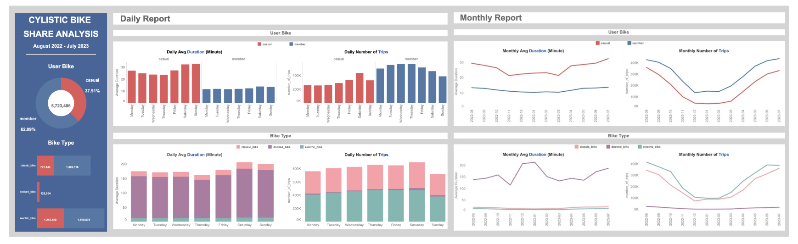

VISUALIZATION
Feel free to explore! These visualizations are designed
to simplify data and provide clear insights.
COVID-19 Indonesia
Looker Studio Dashboard
 This visualization focuses on developing a COVID-19 monitoring dashboard for Indonesia. The dashboard aims to provide a clear overview of the pandemic's impact across different regions. By monitoring COVID-19 trends, the dashboard helps stakeholders, policymakers, and the public make informed decisions based on recent data.
This visualization focuses on developing a COVID-19 monitoring dashboard for Indonesia. The dashboard aims to provide a clear overview of the pandemic's impact across different regions. By monitoring COVID-19 trends, the dashboard helps stakeholders, policymakers, and the public make informed decisions based on recent data.
Dataset
Kasus Covid 19 di Indonesia
Result
As of September 14, 2022, the cumulative number of COVID-19 cases in Indonesia totaled 6.4M (+0.037%), with 157.8K deaths (+0.013%), 6.2M recoveries (+0.063%), and 30.4K active cases (-3.674%). The Java island has the most COVID-19 cases, mostly recovered with few deaths. Low active cases suggest effective containment, though urban areas likely faced more strain.
Cyclistic Bike-Share Company
Tableau Dashboard
 This interactive dashboard is the result of the Cyclistic Bike-Share Analysis project, designed to identify trends in customer behavior across overall, daily, and monthly usage. It provides insights to support strategic decisions that will maximize the number of annual memberships as a key driver of Cyclistic's future growth.
Dataset
Summary of Cyclistic Bike Share Trips
Result
- The largest contribution number of trips in Cylistic is member riders bike in percentage to 62.09% from overall.
- Electric bikes are the most popular choice among members and casual riders because their electric motors make riding easier.
- Casual riders take most of their trips on weekends with longer average durations, while member riders primarily take trips on weekdays.
- Trip numbers peak from June to September, aligning with summer and the transition to fall.